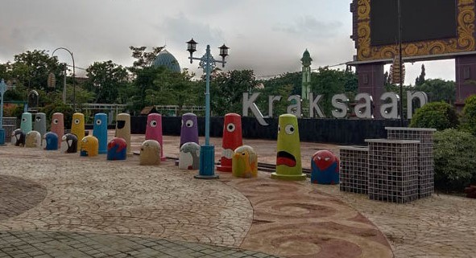
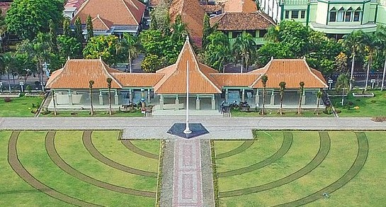
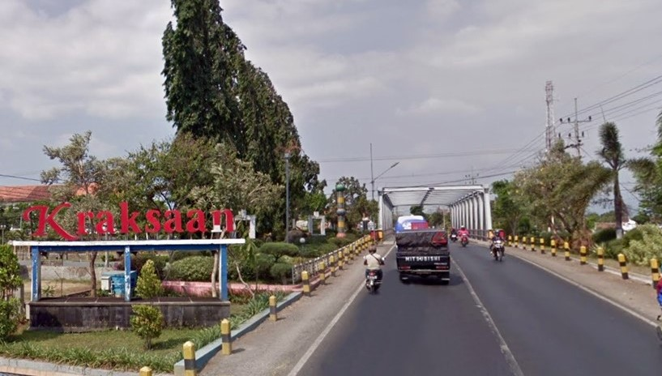

hometown
- Kraksaan, Indonesia -
Kraksaan is a town, an administrative district and the regency seat of Probolinggo Regency, East Java, Indonesia. Kraksaan has a tropical savanna climate with moderate to little rainfall from April to November and heavy rainfall from December to March.


